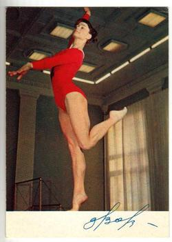

Zinaida Voronina (USSR)
(née Druzhinina)
1968 Olympic Silver AA Medalist

|
Medal Total Olympic
Games:
1 Gold, 1 Silver, 2 Bronze |
Zinaida was born on December 10,
1947, in Ioshkar-Ola (Russian SFSR). Zinaida never knew her father; her
mother was an alcoholic. When she was invited to join a gymnastics class
after school, she fell in love with the sport. In winter 1965, she and her coach
Vladimir Shelkovnikov moved to Moscow to take advantage of the capital's
superior training conditions.
She married fellow gymnast Mikhail
Voronin, and their son, Dmitry, was born on August 25, 1969.
After his birth, Zinaida resumed training and quickly regained her skills.
She won 4 medals at the 1970 World Championships and hoped to compete at the
1972 Olympics. When she wasn't named to the team, she tried working as a
coach. But she frequently chose to drink rather than to work. In
1980 she and Voronin divorced, and Mikhail was awarded custody of their
son. She left Moscow for Balashikha (about 100km from the capital), and
worked in a factory there for twenty years. Zinaida died in March 2001.
Competition Results
1965
RSFSR Championships: 1st AA, 1st V, 1st FX
USSR Championships: 4th AA, 2nd FX
USSR-JPN Dual Meet: 1st Team, 1st AA
1966
ROM-USSR Dual Meet: 1st Team, 2nd AA
USSR Championships: 5th AA, 2nd FX, 3rd V, 5th UB
USSR Cup: 3rd AA
USSR World Trials: 4th AA
World Championships: 2nd Team, 10th AA, 3rd FX
1967
European Championships: 2nd AA, 3rd B,
3rd FX, 4th UB, 5th FX
Pre-Olympics: 5th AA
RSFSR Championships: 1st AA, 1st V
USSR Championships: 3rd V, 3rd B, 3rd FX
USSR Spartakiad: 3rd V, 3rd UB
1968
Olympics: 1st Team, 2nd AA, 3rd
V, 3rd UB, 4th FX
USSR Championships: 2nd AA, 1st V, 1st FX, 2nd UB, 5th B
1970
Dinamo Championships: 3rd AA, 2nd B
USSR Championships: 2nd AA, 2nd V, 3rd UB, 3rd B, 3rd FX
USSR Cup: 2nd AA
USSR-FIN: 1st Team, 1st AA
Winnipeg International: 2nd AA, 1st FX
World Championships: 1st Team, 3rd AA,
3rd UB, 3rd FX
1971
Spartakiade of the Russian Federation: 2nd AA
USSR Championships: 7th AA, 4th UB, 5th V, 5th FX
1972
USSR Championships: 10th AA, 4th UB, 6th B, 7th FX
USSR Cup: 10th AA
This page was created on March 12, 2000
and was last updated on March 24, 2026.
© Gymn Forum